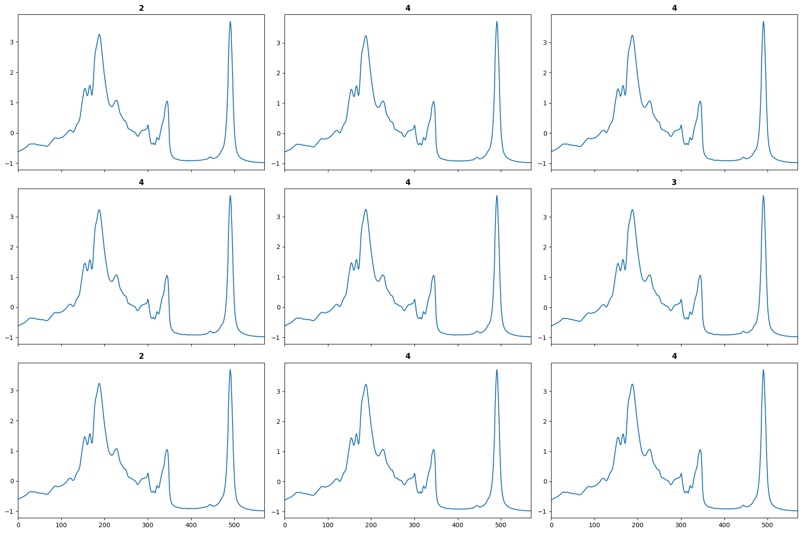
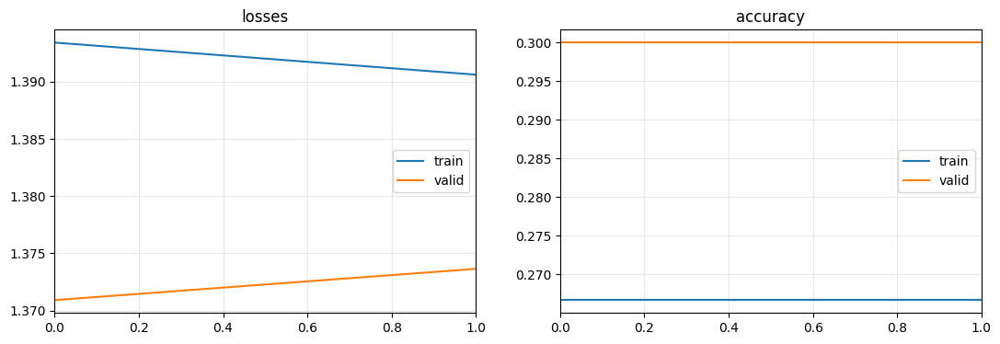

for arch_name in all_archs_names:
get_arch(arch_name)Learner
fastai Learner extensions.
Learner.show_batch
Learner.show_batch (**kwargs)
Learner.remove_all_cbs
Learner.remove_all_cbs (max_iters=10)
Learner.one_batch
Learner.one_batch (i, b)
Learner.inverse_transform
Learner.inverse_transform (df:pandas.core.frame.DataFrame)
Applies sklearn-type pipeline inverse transforms
Learner.transform
Learner.transform (df:pandas.core.frame.DataFrame)
Applies sklearn-type pipeline transforms
⚠️ Important: save_all and load_all methods are designed for small datasets only. If you are using a larger dataset, you should use the standard save and load_learner methods.
load_all
load_all (path='export', dls_fname='dls', model_fname='model', learner_fname='learner', device=None, pickle_module=<module 'pickle' from '/opt/hostedtoolcache/Python/3.9.16/x64/lib/pytho n3.9/pickle.py'>, verbose=False)
Learner.save_all
Learner.save_all (path='export', dls_fname='dls', model_fname='model', learner_fname='learner', verbose=False)
Learner.plot_metrics
Learner.plot_metrics (nrows:int=1, ncols:int=1, figsize:tuple=None, imsize:int=3, suptitle:str=None, sharex=False, sharey=False, squeeze=True, width_ratios=None, height_ratios=None, subplot_kw=None, gridspec_kw=None)
| Type | Default | Details | |
|---|---|---|---|
| nrows | int | 1 | Number of rows in returned axes grid |
| ncols | int | 1 | Number of columns in returned axes grid |
| figsize | tuple | None | Width, height in inches of the returned figure |
| imsize | int | 3 | Size (in inches) of images that will be displayed in the returned figure |
| suptitle | str | None | Title to be set to returned figure |
| sharex | bool | False | |
| sharey | bool | False | |
| squeeze | bool | True | |
| width_ratios | NoneType | None | |
| height_ratios | NoneType | None | |
| subplot_kw | NoneType | None | |
| gridspec_kw | NoneType | None | |
| Returns | (plt.Figure, plt.Axes) | Returns both fig and ax as a tuple |
Recorder.plot_metrics
Recorder.plot_metrics (nrows=None, ncols=None, figsize=None, final_losses=True, perc=0.5, imsize:int=3, suptitle:str=None, sharex=False, sharey=False, squeeze=True, width_ratios=None, height_ratios=None, subplot_kw=None, gridspec_kw=None)
| Type | Default | Details | |
|---|---|---|---|
| nrows | int | 1 | Number of rows in returned axes grid |
| ncols | int | 1 | Number of columns in returned axes grid |
| figsize | tuple | None | Width, height in inches of the returned figure |
| final_losses | bool | True | |
| perc | float | 0.5 | |
| imsize | int | 3 | Size (in inches) of images that will be displayed in the returned figure |
| suptitle | str | None | Title to be set to returned figure |
| sharex | bool | False | |
| sharey | bool | False | |
| squeeze | bool | True | |
| width_ratios | NoneType | None | |
| height_ratios | NoneType | None | |
| subplot_kw | NoneType | None | |
| gridspec_kw | NoneType | None | |
| Returns | (plt.Figure, plt.Axes) | Returns both fig and ax as a tuple |
get_arch
get_arch (arch_name)
ts_learner
ts_learner (dls, arch=None, c_in=None, c_out=None, seq_len=None, d=None, splitter=<function trainable_params>, loss_func=None, opt_func=<function Adam>, lr=0.001, cbs=None, metrics=None, path=None, model_dir='models', wd=None, wd_bn_bias=False, train_bn=True, moms=(0.95, 0.85, 0.95), train_metrics=False, valid_metrics=True, seed=None, device=None, verbose=False, pretrained=False, weights_path=None, exclude_head=True, cut=-1, init=None, arch_config={})
tsimage_learner
tsimage_learner (dls, arch=None, pretrained=False, loss_func=None, opt_func=<function Adam>, lr=0.001, cbs=None, metrics=None, path=None, model_dir='models', wd=None, wd_bn_bias=False, train_bn=True, moms=(0.95, 0.85, 0.95), c_in=None, c_out=None, device=None, verbose=False, init=None, arch_config={})
Learner.decoder
Learner.decoder (o)
from tsai.data.core import *
from tsai.data.external import get_UCR_data
from tsai.models.FCNPlus import FCNPlusX, y, splits = get_UCR_data('OliveOil', verbose=True, split_data=False)
tfms = [None, [TSCategorize()]]
dls = get_ts_dls(X, y, splits=splits, tfms=tfms)
learn = ts_learner(dls, FCNPlus)
for p in learn.model.parameters():
p.requires_grad=False
test_eq(count_parameters(learn.model), 0)
learn.freeze()
test_eq(count_parameters(learn.model), 1540)
learn.unfreeze()
test_eq(count_parameters(learn.model), 264580)
learn = ts_learner(dls, 'FCNPlus')
for p in learn.model.parameters():
p.requires_grad=False
test_eq(count_parameters(learn.model), 0)
learn.freeze()
test_eq(count_parameters(learn.model), 1540)
learn.unfreeze()
test_eq(count_parameters(learn.model), 264580)Dataset: OliveOil
X : (60, 1, 570)
y : (60,)
splits : (#30) [0,1,2,3,4,5,6,7,8,9...] (#30) [30,31,32,33,34,35,36,37,38,39...]
learn.show_batch();
from fastai.metrics import accuracy
from tsai.data.preprocessing import TSRobustScaleX, y, splits = get_UCR_data('OliveOil', split_data=False)
tfms = [None, TSClassification()]
batch_tfms = TSRobustScale()
dls = get_ts_dls(X, y, tfms=tfms, splits=splits, batch_tfms=batch_tfms)
learn = ts_learner(dls, FCNPlus, metrics=accuracy, train_metrics=True)
learn.fit_one_cycle(2)
learn.plot_metrics()
if not os.path.exists("./models"): os.mkdir("./models")
if not os.path.exists("./data"): os.mkdir("./data")
np.save("data/X_test.npy", X[splits[1]])
np.save("data/y_test.npy", y[splits[1]])
learn.export("./models/test.pth")